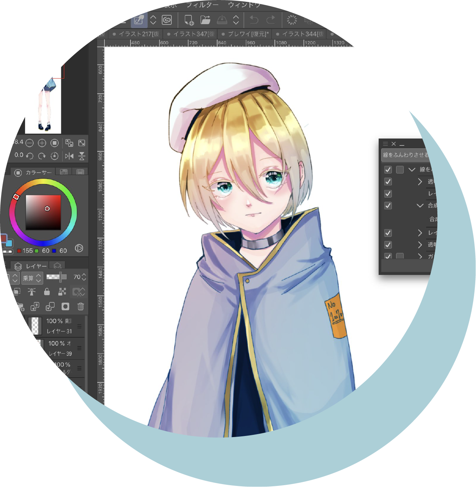
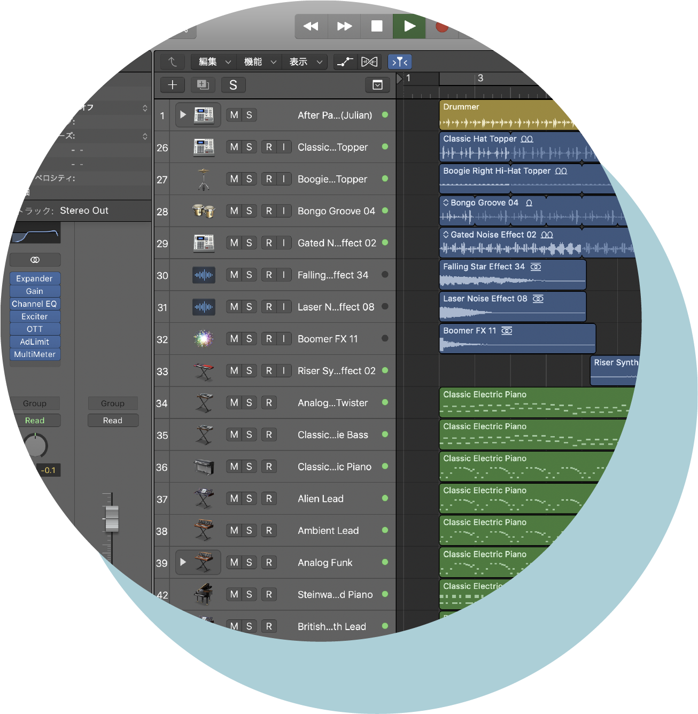
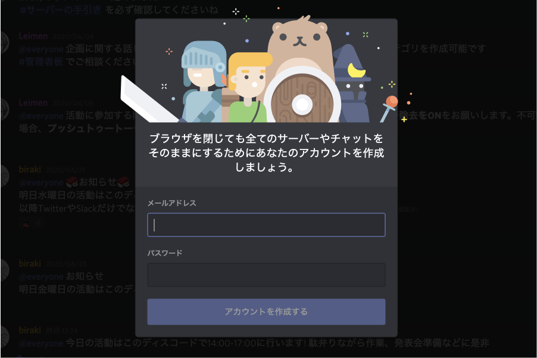
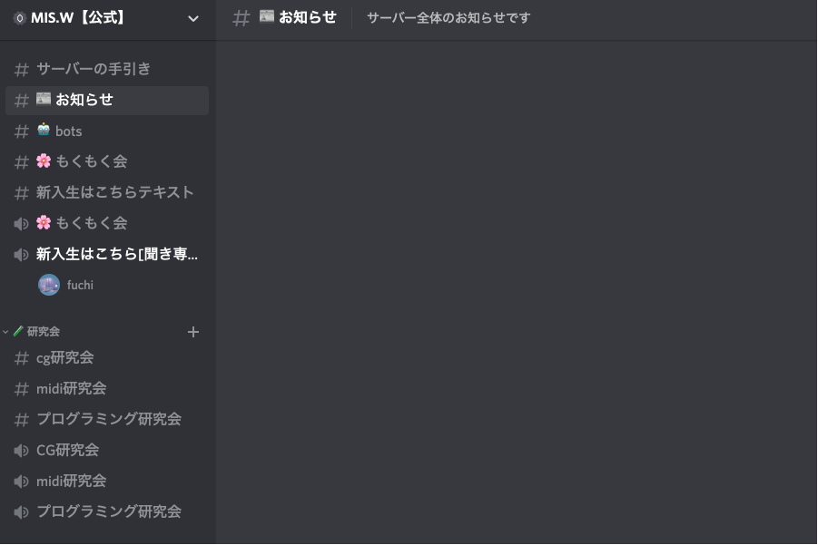
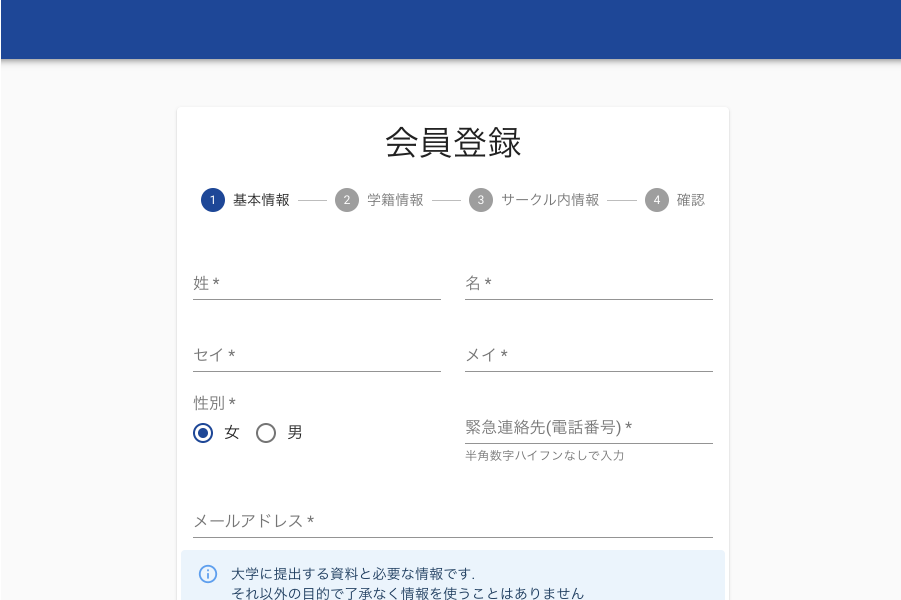

MIS.Wとは?
MIS.Wは早稲田大学最大のデジタル創作サークルです！
早稲田大学経営情報学会(通称:MIS.W)は、早稲田大学最大のデジタル創作サークルです。
サークル設立は1969年、会員数は2020年3月時点で90人以上。理工学部の学生のみならず、政治経済学部・商学部・文学部・文化構想学部など、様々な学部の学生が所属しています。
会員は「プログラミング研究会」・「CG研究会」・「MIDI研究会」の3つの研究会に所属して、創作活動に日々取り組んでいます。
-
 プログラミング研究会
プログラミング研究会システム開発・Web開発・VR開発・ゲーム制作・競技プログラミング
-
CG研究会
デジタルイラスト・3Dモデリング・動画制作・Live2D・デザイン
-
MIDI研究会
作曲・DTM・VOCALOID
活動情報
春学期はDiscordでオンライン活動！
新型コロナウイルス感染症の影響により、現在早稲田大学各キャンパスへの立ち入り禁止措置および学生団体への課外活動自粛要請が出されております。
そのため通常通りのサークル活動を行うことが困難であり、当分の間MIS.Wの活動はオンライン上で行います。
MIS.WではDiscordというアプリを利用して、オンライン上でサークル員同士の交流や作業会などのサークル活動を行っていきます。
Discordとは
DiscordはDiscord Inc.がゲーマー向けに開発したボイスチャットアプリです。 サーバーを開設することでグループ内でのチャット・音声通話・ビデオ通話・画面共有等の便利な機能を簡単に利用できます。
Discord公式サイト活動時間
春学期始業以降(5月11日〜)
春学期始業以前(〜5月10日)
オンライン活動への参加方法
通話の準備
音声通話の際、PCやスマートフォンのスピーカーで音声を再生するとマイクが相手の声や音を拾ってしまい、反響で通話が聞き取りづらい状態になります。
Discordで音声通話を行う際にはイヤホンやヘッドホンを接続するか、もしくはDiscordの音声設定の「エコー除去」をONにするようご協力お願いします。
MIS.W公式Twitterに連絡 & Discordに参加
MIS.W公式TwitterにDMで「活動に参加したい（見学したい）」という旨をお伝えください。その後、見学参加用のDiscord招待リンクを送信させていただきます。
MIS.W公式Twitterはこちら
受け取ったリンクからDiscordのMIS.W公式サーバーにアクセスしてください。すでにDiscordのアカウント登録が済んでいる方は、そのまま画面の指示に従ってサーバーに参加してください。
Discordのアカウントをお持ちでない方は、画面の指示に従ってユーザー名（ニックネーム）を入力し、仮アカウントを作成してサーバーに参加してください。
仮アカウントを作成した後、メールアドレスとパスワードを設定して本登録を行うと2回目以降の設定が不要になります。
ボイスチャンネル「新入生はこちら」へ
サーバーに参加したら、まずは画面左のサイドバーにあるチャンネルの一覧から「新入生はこちら」というボイスチャンネル（音声通話チャンネル）を クリック（タップ）してチャンネルに入室してください。担当のサークル員がMIS.Wの紹介をさせていただきます！
MIS.Wへの入会方法
MISW Portalにアクセスして情報を入力
MIS.Wへの入会手続きは、MIS.W専用のポータルサイト「MISW Portal」から行います。 下のリンクからMISW Portalにアクセスしてください。
早稲田大学以外の大学からのインカレの方については、事務手続き上の関係で一度面談を行う必要がございます。お手数ではございますが、会員登録の前に一度オンライン活動にお越しいただき、その旨をお申し付けください。
MISW Portalにアクセス後、画面の指示に従って会員登録フォームから情報を入力してください。
メール認証 & 入会費の支払い
会員登録フォームに入力したメールアドレス宛にアカウント認証用のメールが送信されます。メールの指示に従ってアカウントの認証を行ってください。
アカウントの認証後、入会費の支払いに移ります。画面の指示に従って、MIS.Wの銀行口座へ 入会費1000円 の振り込みを行ってください。（振込手数料はご自身でのご負担となりますのでご了承ください。）
MIS.WのSlackへ参加
振り込みが確認され次第、会員登録フォームに入力したメールアドレス宛にMIS.WのSlackへの招待メールが送信されます。 招待メールからSlackに参加し、MIS.Wへの入会手続きは全て完了です。
イベントスケジュール
-
5月6日(水)14:00〜
春の発表会2020
MIS.Wのサークル員が制作物の発表を行います。サークルのメンバーや雰囲気を知ることができる良い機会です！
プログラミング CG MIDI -
5月13日(水)21:00〜
プログラミング研究会 新歓講座①
5/13(水)と5/22(土)に予定されているプロ研講座では、C言語の入門講座を開きます。動作の全てをブラウザ上で行うため環境構築などは一切不要ですのでプログラミングに興味があるけど経験のない人も是非来てください。
プログラミング -
5月16日(土)14:00〜
CG研究会 新歓講座①
CG研講座は2種類の線画を配布しライブペイントの画面を見てもらいながら一緒に塗ってみよう！という内容になります。質問はいつでも受け付けますので初心者の方も歓迎です。ぜひご参加ください〜！
CG -
5月20日(水)21:00〜
MIDI研究会 新歓講座①
MIDI研で楽曲制作に挑戦してみませんか。
DTMの操作というよりは、具体的に既存の楽曲を音楽を作る人の視点で紐解くことを通じて、曲を書くという本質的な内容について考えを深めます。MIDI -
5月23日(土)14:00〜
プログラミング研究会 新歓講座②
5/13(水)と5/22(土)に予定されているプロ研講座では、C言語の入門講座を開きます。動作の全てをブラウザ上で行うため環境構築などは一切不要ですのでプログラミングに興味があるけど経験のない人も是非来てください。
プログラミング -
5月27日(水)21:00〜
CG研究会 新歓講座②
CG研講座は2種類の線画を配布しライブペイントの画面を見てもらいながら一緒に塗ってみよう！という内容になります。質問はいつでも受け付けますので初心者の方も歓迎です。ぜひご参加ください〜！
CG -
5月30日(土)14:00〜
MIDI研究会 新歓講座②
MIDI研で楽曲制作に挑戦してみませんか。
DTMの操作というよりは、具体的に既存の楽曲を音楽を作る人の視点で紐解くことを通じて、曲を書くという本質的な内容について考えを深めます。MIDI